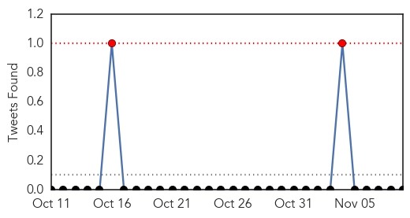
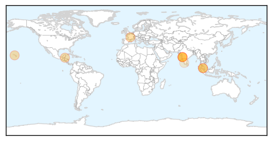

Influenza
30-Day Web Trend
0 alerts, 0 warnings

30-Day Twitter Trend
0 alerts, 0 warnings

Article Locations

Article Confidences
Top Articles:
- 0.999
- A flu shot can protect you and everyone around you
- 0.998
- Study finds influenza viruses put more people in hospital
- 0.998
- Why It’s Important to Prepare for Flu Season
- 0.992
- Scarsdale parents of Amanda Kanowitz urge flu vaccine after daughter's death
- 0.976
- Why I decided to get the flu vaccine for myself and my children
- 0.953
- Unvaccinated Children Show Better Resistance to EV-D68 Virus
- 0.944
- Cryptosporidium and Flu Shots: Today’s topics on Outbreak News This Week
- 0.907
- Getting A Flu Shot Is Not Just About You
- 0.871
- Weather change may trigger flu in Oman
Top Tweets:
-
No tweets found for Nov 09, 2014
Dengue Fever
30-Day Web Trend
0 alerts, 0 warnings

30-Day Twitter Trend
3 alerts, 0 warnings

Article Locations
Article Confidences

Top Articles:
- 0.993
- Dengue’s alarming spread flies unnoticed amid Ebola scare
- 0.991
- WHO warns of severe dengue outbreak amid Ebola scare - Nation
- 0.985
- Dengue burdens productive population on Southside Belize City
- 0.978
- Infectious Disease Center: Information on Infections
- 0.970
- Many blame dirty water, do not look for freshwater breeding sites inside homes
- 0.949
- Health dept declares war on dengue
- 0.944
- Another KEM Doctor Diagnosed With Dengue
- 0.933
- Malaysia in uphill battle against dengue fever
- 0.543
- The Statesman: President's Estate breeding mosquitoes
- 0.528
- Be careful: Changing weather risky for children
Top Tweets:
- 0.729
- Flavivirus news: Dengue's spread flies under the radar amid Ebola scare - Medical Xpress: RIA N... http://t.co/o9elfw97hp pathogenposse